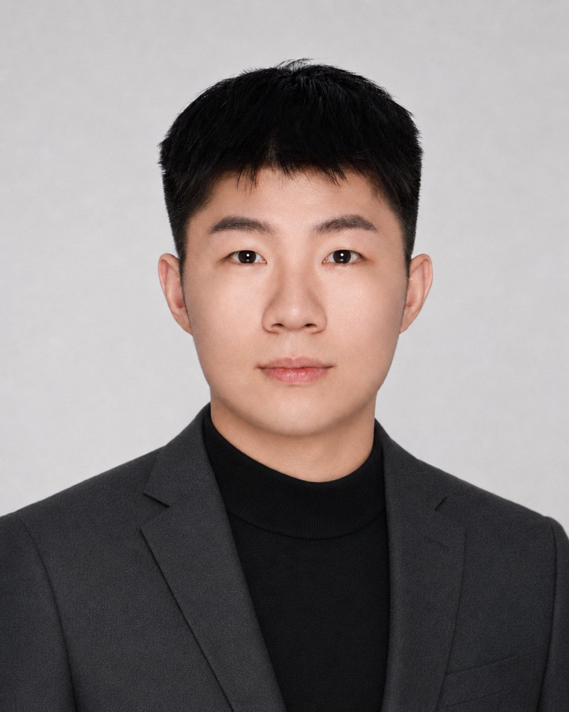

AI Quant / Embodied Intelligence / Safety
吕明扬
中国科学院自动化所博士研究生，本科毕业于西安交通大学自动化专业并辅修英语。研究兴趣横跨具身智能、AI 量化与 AI 安全，是典型的“工程系统 + 前沿模型”型研究者。
明扬的训练背景天然连接控制、智能体、算法系统与真实世界反馈。他关注的不只是模型能否给出答案，更关注模型如何在复杂环境中感知、行动、修正，并最终进入可验证的决策流程。
他拥有三段实习经历、一段创业经历和多项竞赛经历，具备从研究问题、工程实现到产品表达之间来回切换的经验。学术方面已有一作发表和在投论文四篇，并参与多篇其他作者论文，形成了兼具研究密度和落地意识的技术画像。
教育背景西安交通大学自动化本科，中国科学院自动化所博士研究生。
研究专长具身智能、AI 量化、AI 安全，以及面向决策场景的模型系统。
经历侧写三段实习、一段创业、多项竞赛经历，兼具研究和实践敏感度。